<!doctype html>
<html lang="zh-CN">
<head>
  <meta charset="utf-8">
  <meta name="viewport" content="width=device-width, initial-scale=1">
  <title>FoodMap P27 阶段性自动化验收报告</title>
  <style>
    :root { color: #261b12; background: #f7f1e7; font-family: Inter, "Segoe UI", "Microsoft YaHei", sans-serif; }
    body { margin: 0; }
    main { max-width: 1180px; margin: 0 auto; padding: 32px 20px 56px; }
    h1, h2, h3 { margin: 0; line-height: 1.2; }
    h1 { font-size: 34px; }
    h2 { font-size: 22px; margin-top: 32px; border-top: 1px solid #ddcdb9; padding-top: 24px; }
    h3 { font-size: 16px; }
    p, li, td, th { line-height: 1.65; }
    .hero { display: grid; gap: 12px; padding: 28px; border: 1px solid #ddcdb9; background: #fffaf2; border-radius: 8px; }
    .summary { display: grid; grid-template-columns: repeat(4, minmax(0, 1fr)); gap: 12px; margin-top: 18px; }
    .metric { padding: 14px; background: #fff; border: 1px solid #e4d7c6; border-radius: 8px; }
    .metric strong { display: block; font-size: 18px; }
    table { width: 100%; border-collapse: collapse; background: #fff; border: 1px solid #e4d7c6; border-radius: 8px; overflow: hidden; }
    th, td { padding: 10px 12px; border-bottom: 1px solid #eadfD1; text-align: left; vertical-align: top; }
    th { background: #f0e3d1; }
    code { font-family: "SFMono-Regular", Consolas, monospace; font-size: 12px; overflow-wrap: anywhere; }
    .pill { display: inline-flex; align-items: center; padding: 4px 8px; border-radius: 999px; font-size: 12px; font-weight: 700; }
    .pass { background: #e4f4e8; color: #176332; }
    .fail { background: #ffe1d8; color: #8d260f; }
    .warn { background: #fff0c7; color: #7a4b00; }
    .grid { display: grid; grid-template-columns: repeat(2, minmax(0, 1fr)); gap: 16px; }
    .shot { background: #fff; border: 1px solid #e4d7c6; border-radius: 8px; padding: 12px; }
    .shot img { width: 100%; border-radius: 6px; border: 1px solid #e5ddcf; background: #f8f8f8; }
    .issue { background: #fff; border-left: 4px solid #b64a2c; padding: 12px 14px; margin: 10px 0; }
    .note { background: #fff8de; border: 1px solid #e7d38b; padding: 12px 14px; border-radius: 8px; }
    @media (max-width: 760px) { .summary, .grid { grid-template-columns: 1fr; } h1 { font-size: 26px; } main { padding: 20px 12px 40px; } }
  </style>
</head>
<body>
<main>
  <section class="hero">
    <h1>FoodMap P27 阶段性自动化验收报告</h1>
    <p>本报告基于原始 PRD、目标架构、当前代码、自动化命令和真实浏览器截图生成。报告明确区分“本地/受保护预览可用”和“P27 大陆稳定公网出门仍阻塞”。</p>
    <div class="summary">
      <div class="metric"><strong>验收评价</strong><span class="pill fail">NEEDS WORK / BLOCKED</span></div>
      <div class="metric"><strong>截图证据</strong>11 张</div>
      <div class="metric"><strong>P27 公网</strong>https://foodmap.edgeone.cool/ returned HTTP 401</div>
      <div class="metric"><strong>生成时间</strong>2026-06-29T11:36:23.413Z</div>
    </div>
  </section>

  <h2>1. 原始 PRD 与当前实现评价</h2>
  <table>
    <thead><tr><th>PRD 要求</th><th>当前实现证据</th><th>评价</th></tr></thead>
    <tbody>
      <tr><td>纯前端、本地优先、静态部署优先</td><td>Vite/React 静态构建、IndexedDB repository、.foodmap.json 导入导出、manifest/sw 本地验证通过。</td><td><span class="pill pass">通过</span></td></tr>
      <tr><td>#/map 个人工作台，地图优先</td><td>截图 01、03、10 展示工作台、地图、搜索、筛选和移动底部操作。</td><td><span class="pill pass">通过</span></td></tr>
      <tr><td>#/share/:snapshotId 本地只读分享</td><td>截图 08、11 展示缺失快照恢复；历史 P21/P23/P26 E2E 覆盖只读分享和导入 no-write。</td><td><span class="pill pass">当前基线通过</span></td></tr>
      <tr><td>导入导出 .foodmap.json</td><td>截图 02 展示数据包入口；E2E 覆盖导出、clean profile 导入、无效导入 no-op。</td><td><span class="pill pass">通过</span></td></tr>
      <tr><td>不做账号、云同步、后端、永久公网分享</td><td>PRD/架构/报告均保持本地优先边界；P27 报告不声明公网永久分享。</td><td><span class="pill pass">通过</span></td></tr>
      <tr><td>大陆用户稳定公网访问</td><td>EdgeOne protected-preview 部署成功，但 tokenless 默认域名 HTTP 401；未完成稳定公网 URL、Mate70 公网证据和 final report。</td><td><span class="pill fail">阻塞</span></td></tr>
    </tbody>
  </table>

  <h2>2. 目标架构与当前架构实现</h2>
  <table>
    <thead><tr><th>架构层</th><th>当前代码实体</th><th>状态</th></tr></thead>
    <tbody>
      <tr><td>App Shell / Hash Router</td><td>React App、#/map、#/share/:snapshotId、WebAppStatus</td><td><span class="pill pass">已实现</span></td></tr>
      <tr><td>Workspace UI</td><td>MapWorkspace、MapCanvas、ImportExportDialog、PersonalDataHealthCenter、GovernanceWorkbench</td><td><span class="pill pass">已实现</span></td></tr>
      <tr><td>Domain / Repository</td><td>locationStatus、governance、importExportCodec、IndexedDB repositories</td><td><span class="pill pass">已实现</span></td></tr>
      <tr><td>Static Deployment</td><td>build:mainland、build:edgeone、verify:mainland:deployment、deploy:edgeone</td><td><span class="pill pass">本地和 protected-preview 可用</span></td></tr>
      <tr><td>P27 Public URL Evidence</td><td>verify:p27:release、smoke:p27:browser、P27 blocker docs</td><td><span class="pill fail">公网出门阻塞</span></td></tr>
    </tbody>
  </table>

  <h2>3. 自动化命令结果</h2>
  <table>
    <thead><tr><th>命令</th><th>结果</th><th>执行内容</th><th>摘要</th><th>日志</th></tr></thead>
    <tbody>
    <tr>
      <td>npm ci</td>
      <td><span class="pill pass">通过</span></td>
      <td><code>npm ci</code></td>
      <td>added 110 packages, and audited 111 packages in 16s / 19 packages are looking for funding /   run `npm fund` for details / 1 low severity vulnerability / To address all issues, run: /   npm audit fix / Run `npm audit` for details.</td>
      <td><a href="command-logs/01-npm-ci.log">日志</a></td>
    </tr>

    <tr>
      <td>大陆/EdgeOne 构建</td>
      <td><span class="pill pass">通过</span></td>
      <td><code>npm run build:edgeone</code></td>
      <td>dist/index.html                   1.48 kB │ gzip:  0.66 kB / dist/assets/map-CIGW-MKW.css     15.61 kB │ gzip:  6.46 kB / dist/assets/index-vI0vtfU7.css   69.43 kB │ gzip: 12.37 kB / dist/assets/icons-NlZrM61o.js    10.57 kB │ gzip:  3.91 kB / dist/assets/map-B-Xn5z6W.js     149.50 kB │ gzip: 43.29 kB / dist/assets/react-BuGNL1hR.js   192.46 kB │ gzip: 60.33 kB / dist/assets/index-CJAw3Sqq.js   390.19 kB │ gzip: 96.48 kB / ✓ built in 16.18s</td>
      <td><a href="command-logs/02-build-edgeone.log">日志</a></td>
    </tr>

    <tr>
      <td>Vitest 单元测试</td>
      <td><span class="pill pass">通过</span></td>
      <td><code>npm test -- --run</code></td>
      <td> ✓ src/tests/domain.test.ts (46 tests) 38ms /  Test Files  1 passed (1) /       Tests  46 passed (46) /    Duration  2.52s (transform 670ms, setup 0ms, collect 881ms, tests 38ms, environment 0ms, prepare 852ms)</td>
      <td><a href="command-logs/03-unit-tests.log">日志</a></td>
    </tr>

    <tr>
      <td>真实 scanlist 验证</td>
      <td><span class="pill pass">通过</span></td>
      <td><code>npm run verify:scanlist</code></td>
      <td>FoodMap scanlist baseline verification passed.</td>
      <td><a href="command-logs/04-scanlist.log">日志</a></td>
    </tr>

    <tr>
      <td>本地大陆静态验证</td>
      <td><span class="pill pass">通过</span></td>
      <td><code>npm run verify:mainland:deployment</code></td>
      <td>&gt; foodmap@1.0.0 verify:mainland:deployment / &gt; node scripts/verify_mainland_deployment.mjs / [Mainland Deployment Verify] Local dist checks passed for base /.</td>
      <td><a href="command-logs/05-local-mainland.log">日志</a></td>
    </tr>

    <tr>
      <td>P26 release gate</td>
      <td><span class="pill pass">通过</span></td>
      <td><code>npm run verify:p26:release</code></td>
      <td>[P26 Release Verify] Checks passed. Manifest: docs/active/evidence/p26/release-gate-manifest.json</td>
      <td><a href="command-logs/06-p26-release.log">日志</a></td>
    </tr>

    <tr>
      <td>P27 release gate - tokenless EdgeOne</td>
      <td><span class="pill pass">通过</span></td>
      <td><code>npm run verify:p27:release</code></td>
      <td>[P27 Release Verify] blocked_before_final_acceptance. Manifest: docs/active/evidence/p27/release-gate-manifest.json / [P27 Release Verify] Remote stable URL static checks: https://foodmap.edgeone.cool/ returned HTTP 401</td>
      <td><a href="command-logs/07-p27-release-tokenless.log">日志</a></td>
    </tr>

    <tr>
      <td>远端 tokenless 静态验证</td>
      <td><span class="pill pass">通过</span></td>
      <td><code>npm run verify:mainland:deployment</code></td>
      <td>[Mainland Deployment Verify] manifest display must be standalone / [Mainland Deployment Verify] manifest start_url must target #/map / [Mainland Deployment Verify] manifest scope must remain relative to the static host path / [Mainland Deployment Verify] manifest icon is missing FoodMap SVG / [Mainland Deployment Verify] service worker cache name missing / [Mainland Deployment Verify] service worker fallback copy missing / [Mainland Deployment Verify] service worker local-first copy missing / [Mainland Deployment Verify] remote icon is not SVG</td>
      <td><a href="command-logs/08-mainland-remote-401.log">日志</a></td>
    </tr>

    <tr>
      <td>全量 Playwright E2E</td>
      <td><span class="pill fail">失败</span></td>
      <td><code>npm run e2e</code></td>
      <td>      - [pid=174713][err] /home/administrator/.cache/ms-playwright/chromium_headless_shell-1223/chrome-headless-shell-linux64/chrome-headless-shell: error while loading shared libraries: libnspr4.so: cannot open shared object file: No such file or directory /       - [pid=174713] exception while trying to kill process: Error: kill ESRCH /     Error Context: test-results/workspace-P21-responsive-d-6d5b3-0-import-share-and-fallback-mobile/error-context.md /   140 failed /     [desktop] › e2e/workspace.spec.ts:1718:1 › agent bridge returns structured errors, emits events and does not write invalid data  /     [desktop] › e2e/workspace.spec.ts:2611:1 › P25 deployed GitHub Pages stable URL supports map, real data and readonly share  /     [mobile] › e2e/workspace.spec.ts:1718:1 › agent bridge returns structured errors, emits events and does not write invalid data  /     [mobile] › e2e/workspace.spec.ts:2611:1 › P25 deployed GitHub Pages stable URL supports map, real data and readonly share </td>
      <td><a href="command-logs/09-e2e.log">日志</a></td>
    </tr>

    <tr>
      <td>P27 browser smoke - tokenless EdgeOne</td>
      <td><span class="pill pass">通过</span></td>
      <td><code>npm run smoke:p27:browser</code></td>
      <td>[pid=174739][err] /home/administrator/.cache/ms-playwright/chromium_headless_shell-1223/chrome-headless-shell-linux64/chrome-headless-shell: error while loading shared libraries: libnspr4.so: cannot open shared object file: No such file or directory /   - [pid=174739][err] /home/administrator/.cache/ms-playwright/chromium_headless_shell-1223/chrome-headless-shell-linux64/chrome-headless-shell: error while loading shared libraries: libnspr4.so: cannot open shared object file: No such file or directory /   - [pid=174739] exception while trying to kill process: Error: kill ESRCH</td>
      <td><a href="command-logs/10-p27-browser-smoke.log">日志</a></td>
    </tr>
  </tbody>
  </table>

  <h2>4. 可实现用户场景截图</h2>
  <div class="grid">
    <article class="shot">
      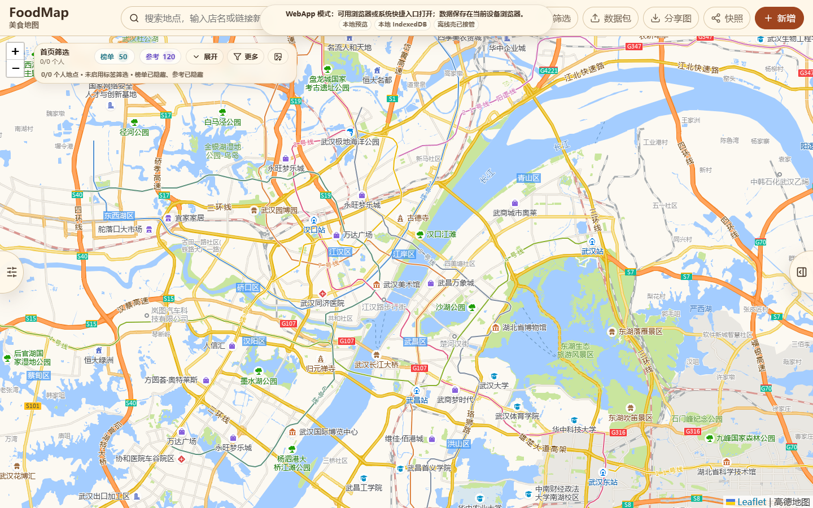
      <h3>工作台首屏</h3>
      <p>地图优先工作台、搜索、筛选、参考层和本地状态。</p>
      <code>docs/active/evidence/p27/stage-audit-2026-06-29/screenshots/01-workspace-home.png</code>
    </article>

    <article class="shot">
      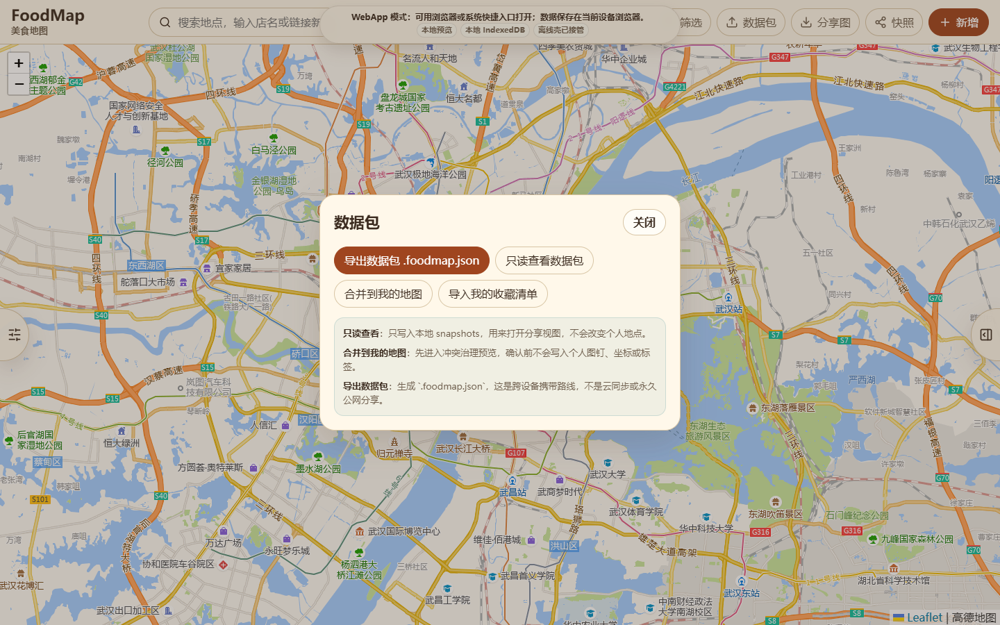
      <h3>数据包导入导出</h3>
      <p>本地 .foodmap.json、个人收藏导入和只读快照入口。</p>
      <code>docs/active/evidence/p27/stage-audit-2026-06-29/screenshots/02-data-package.png</code>
    </article>

    <article class="shot">
      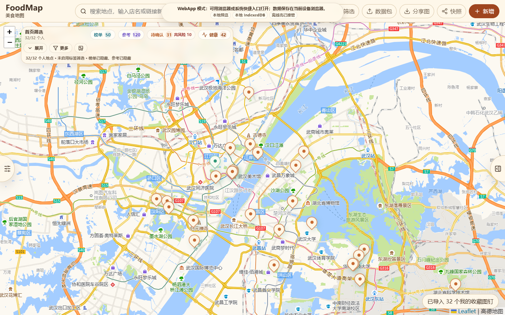
      <h3>个人收藏地图</h3>
      <p>导入武汉个人收藏后，地图展示本地个人图钉和健康入口。</p>
      <code>docs/active/evidence/p27/stage-audit-2026-06-29/screenshots/03-personal-favorites-map.png</code>
    </article>

    <article class="shot">
      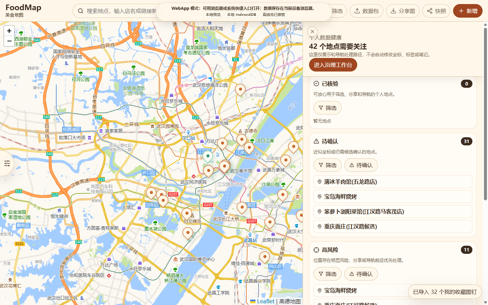
      <h3>个人数据健康中心</h3>
      <p>已核验、待确认、高风险、手动校准、已跳过分组。</p>
      <code>docs/active/evidence/p27/stage-audit-2026-06-29/screenshots/05-data-health.png</code>
    </article>

    <article class="shot">
      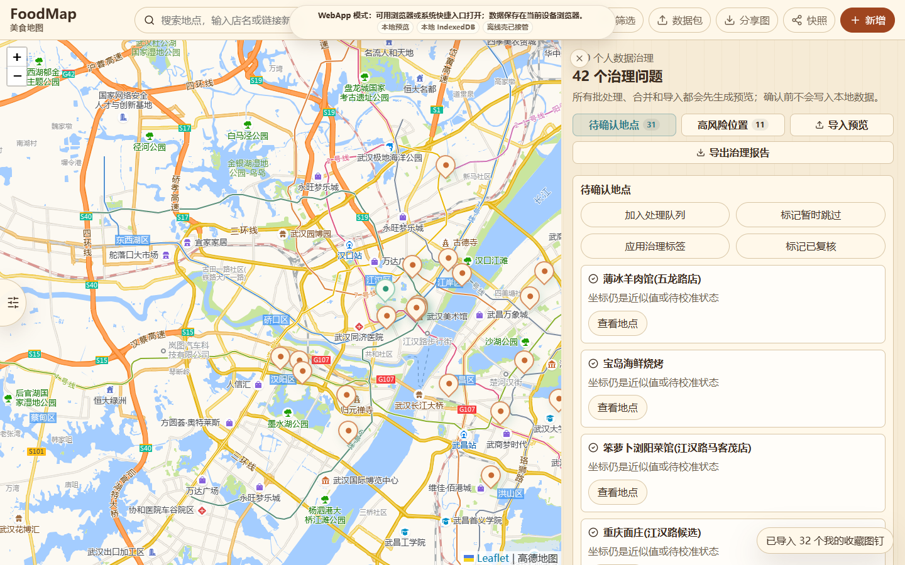
      <h3>治理工作台</h3>
      <p>重复地点、导入冲突、维护历史和安全写入说明。</p>
      <code>docs/active/evidence/p27/stage-audit-2026-06-29/screenshots/06-governance-workbench.png</code>
    </article>

    <article class="shot">
      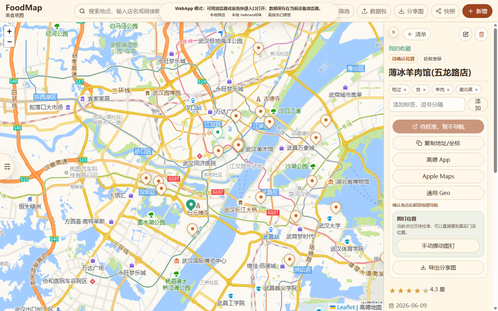
      <h3>地点详情</h3>
      <p>地点状态、标签、外部地图、评分、地址和本地记录详情。</p>
      <code>docs/active/evidence/p27/stage-audit-2026-06-29/screenshots/04-place-detail.png</code>
    </article>

    <article class="shot">
      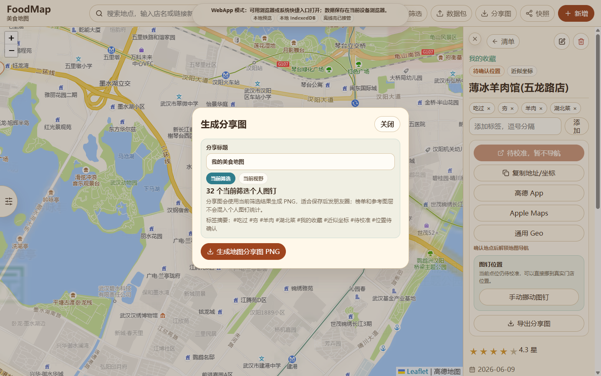
      <h3>当前视野分享图</h3>
      <p>分享图 composer 显示当前筛选和当前视野模式，不把参考层算作个人记录。</p>
      <code>docs/active/evidence/p27/stage-audit-2026-06-29/screenshots/07-current-viewport-poster.png</code>
    </article>

    <article class="shot">
      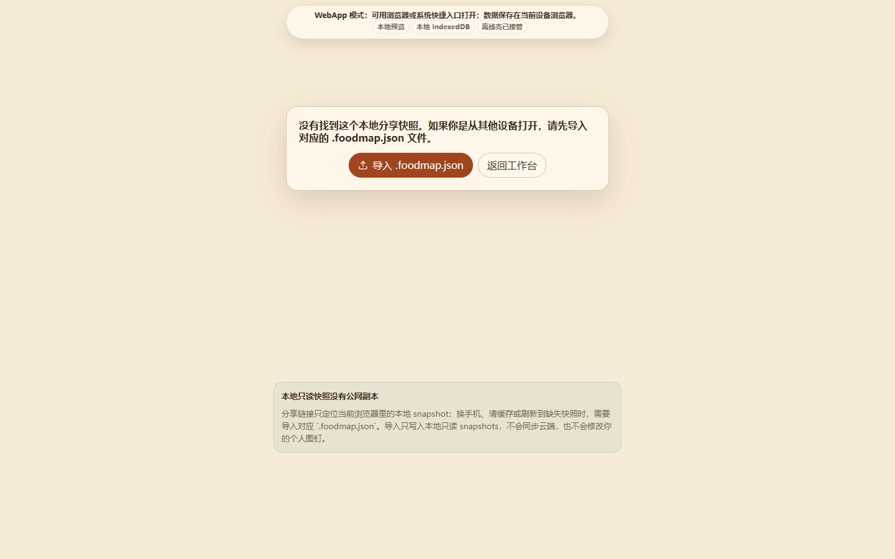
      <h3>缺失分享快照恢复</h3>
      <p>缺失 snapshot route 提供导入数据包和返回工作台路径。</p>
      <code>docs/active/evidence/p27/stage-audit-2026-06-29/screenshots/08-missing-share-fallback.png</code>
    </article>

    <article class="shot">
      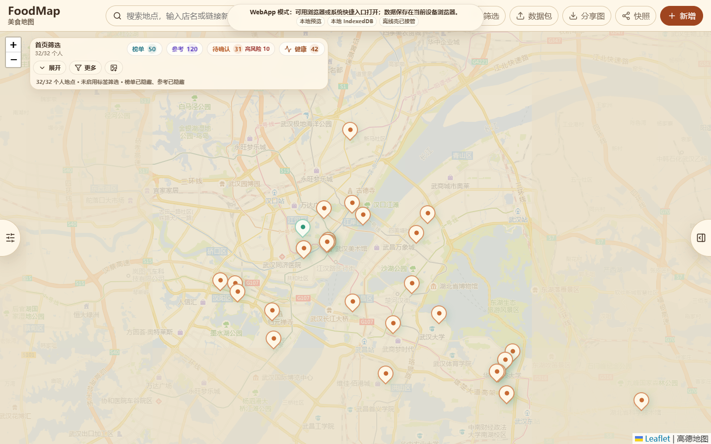
      <h3>WebApp 与发布状态</h3>
      <p>WebApp、本地 IndexedDB、service worker 和发布目标说明。</p>
      <code>docs/active/evidence/p27/stage-audit-2026-06-29/screenshots/09-webapp-status.png</code>
    </article>

    <article class="shot">
      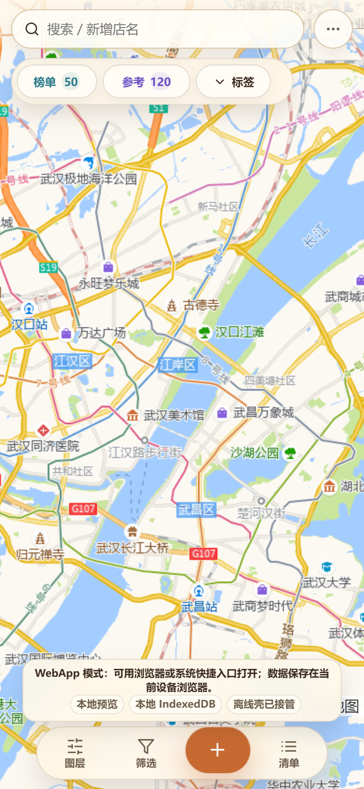
      <h3>移动端工作台</h3>
      <p>390px 移动工作台展示地图、搜索、快捷筛选和底部操作。</p>
      <code>docs/active/evidence/p27/stage-audit-2026-06-29/screenshots/10-mobile-workspace.png</code>
    </article>

    <article class="shot">
      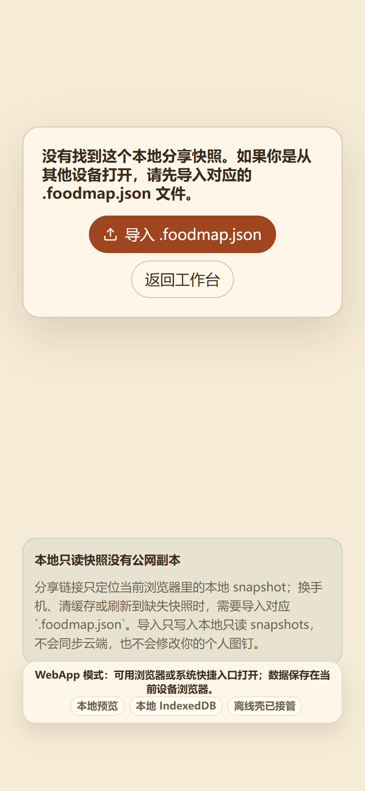
      <h3>移动端缺失分享恢复</h3>
      <p>移动端缺失只读快照仍可理解本地数据包恢复路径。</p>
      <code>docs/active/evidence/p27/stage-audit-2026-06-29/screenshots/11-mobile-missing-share.png</code>
    </article>
  </div>

  <h2>5. 缺陷、阻塞与现实评价</h2>
  <div class="issue">P27 公网出门阻塞：EdgeOne tokenless 默认域名 https://foodmap.edgeone.cool/ 远端静态验证返回 HTTP 401。</div><div class="issue">P27 Mate70 公网 URL 证据缺失：没有稳定公网 URL 时不能执行真实公网实机验收。</div><div class="issue">公网域名注册、ICP备案、DNS 绑定、HTTPS 证书配置已按本轮决策绕开，属于外部前置条件。</div><div class="issue">完整 E2E 若失败，必须按命令结果保留为回归风险，不能用截图报告替代测试通过。</div>
  <div class="issue">截图采集问题：Linux Playwright Chromium 启动失败，改用 Windows Chrome CDP：browserType.launch: Target page, context or browser has been closed</div>
  <div class="note">
    <strong>验收评价：</strong>当前 FoodMap 的本地优先 WebApp 主路径、数据包、健康中心、治理、分享图和移动工作台可以通过本地自动化截图证明；P18-P26 accepted baseline 仍需以命令结果为准。P27 大陆稳定公网访问未完成，整体状态为 <strong>NEEDS WORK / BLOCKED</strong>，不能声明 P27 final acceptance。
  </div>
</main>
</body>
</html>